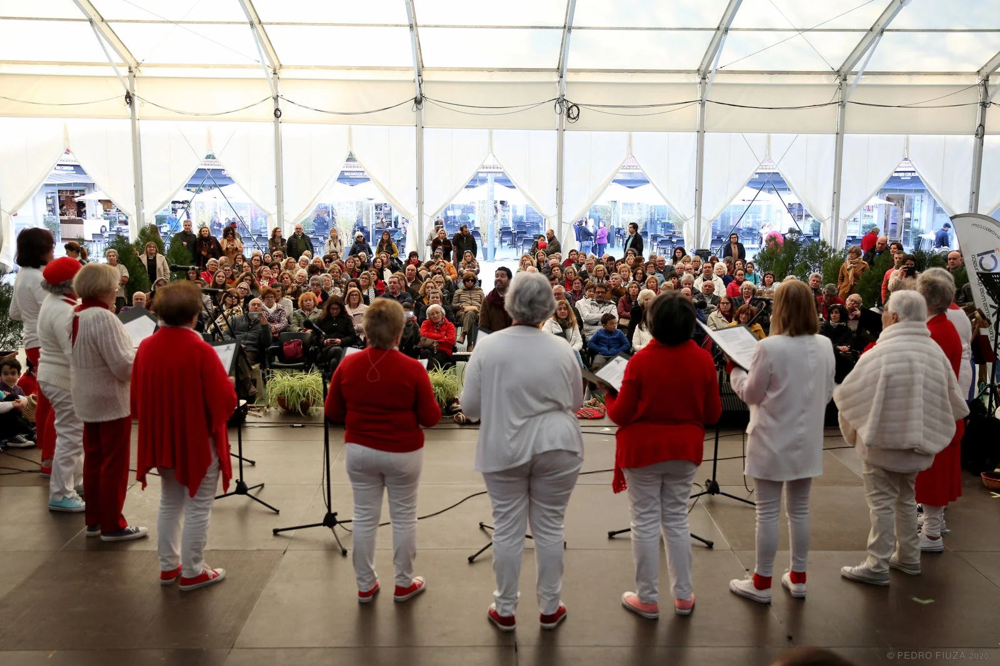

Repertório
Obras de diferentes épocas, estilos e geografias.

Coro adulto · Grupo vocal
A voz no coração da comunidade VoxLaci.
Porquê este nome?
Cor, cordis: em latim, é a palavra para coração — a mesma raiz que deu origem a palavras como “cordial” ou “coragem”. No centro de VoxCor está por isso uma ideia simples: cantar vem do coração. Existe também aqui uma proximidade sonora feliz entre Cor, coro e core, o núcleo — porque é também um grupo que está no coração da comunidade VoxLaci. VoxCor acolhe sobretudo cantores a partir dos 60 anos, e cada pessoa chega com uma vida inteira de experiências, memórias, músicas e histórias — e tudo isso entra no som do coro. Aqui, idade não significa limite. Significa repertório humano. Trabalhamos voz, respiração, escuta, memória, interpretação e repertórios de diferentes épocas e estilos, criando simultaneamente um espaço de encontro e pertença. Não é preciso ter cantado toda a vida. É preciso apenas ainda ter vontade de descobrir o que a sua voz pode fazer.
Adultos
A VoxCor é um coro de adultos da VoxLaci, sobretudo a partir dos 60 anos, com transporte disponível para os ensaios à segunda-feira (12h–13h15) no Seminário Torre d'Águilha, em São Domingos de Rana, Cascais.
VoxCor reúne vozes adultas num trabalho coral de repertório, técnica, interpretação e palco. A experiência combina exigência musical com o espírito de comunidade que define VoxLaci. Como em toda a VoxLaci, ser amador tem aqui o sentido mais antigo da palavra: aquele que ama.
Porque cantar aqui
Obras de diferentes épocas, estilos e geografias.
Trabalho de frase, texto, som de conjunto e presença cénica.
Transporte disponível para os ensaios e pagamento mensal flexível, pensados para esta fase da vida.
A sua voz começa aqui
Outros caminhos